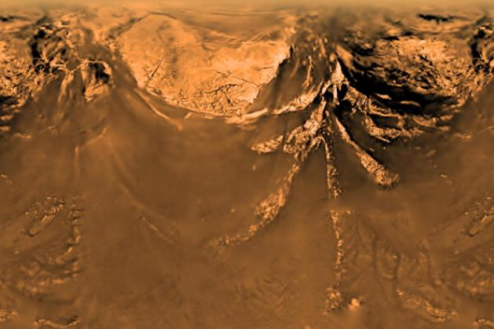
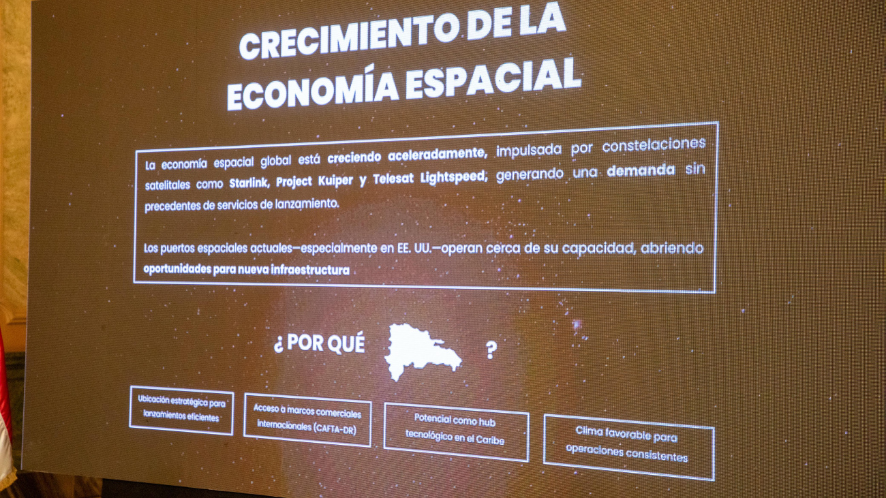
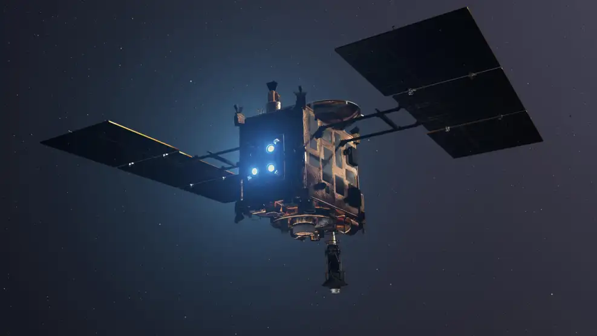
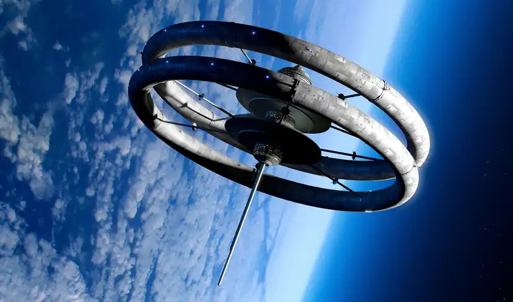
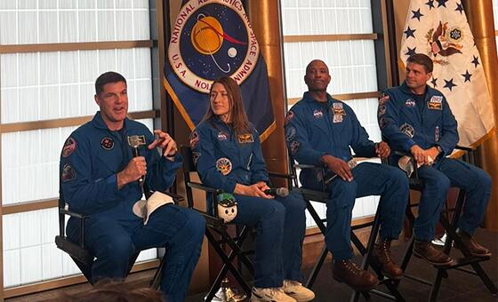

📰 Noticias Espaciales
Mantente informado sobre los últimos descubrimientos.

Marte es un callejón sin salida: por qué Titán, la luna de Saturno, es el mejor lugar para una colonia humana en el espacio
Se trata del único cuerpo celeste conocido en el sistema solar con líquidos estables en su superficie.
Leer más
República Dominicana traza ruta hacia la economía espacial con proyecto en Pedernales
El proyecto tendrá una inversión estimada de más de 600 millones de dólares.
Leer más
Ni la radiación ni el frío: el inesperado fenómeno que podría complicar la llegada del ser humano a Marte
Una investigación internacional reveló que las intensas tormentas de polvo del planeta rojo podrían generar pequeñas descargas eléctricas. El hallazgo representa un nuevo desafío para la exploración espacial y aporta pistas sobre la evolución química del vecino más estudiado de la Tierra.
Leer más
Misión espacial Hayabusa2: la sonda de Japón se prepara para un histórico acercamiento al asteroide Torifune
El dispositivo espacial de la agencia JAXA pasará a una distancia récord del cuerpo celeste este 5 de julio, en una arriesgada operación de reconocimiento que servirá para evaluar nuevas tecnologías de defensa planetaria.
Leer más
Rusia quiere hacer realidad la ciencia ficción: patenta una estación espacial giratoria capaz de generar gravedad artificial
La Estación Espacial Internacional y Rusia tienen un compromiso hasta 2028. La patente es un ejemplo de lo que podría venir en la infraestructura para el espacio.
Leer más
Los astronautas de la Artemis II llegan a la ONU: “la humanidad es capaz de cosas extraordinarias cuando actúa junta”
Los cuatro tripulantes de la misión, tres estadounidenses y un canadiense, destacan como la exploración espacial es imposible sin la cooperación internacional. También dan un testimonio privilegiado: a cientos de miles de kilómetros de distancia, el planeta parece pequeño y frágil.
Leer más